Age 48.
DOB 9/30/1960
DOD 8/4/2009
5-10, 155 lbs.
Never married.
Pittsburgh, Pennsylvania USA
Note: I tried to find the original "me.htm" of George Sodini, but I wasn't able to. However, here is the information I gathered from the web:
George Sodini (September 30, 1960 – August 4, 2009) was an unmarried American systems analyst who executed a targeted mass shooting at an LA Fitness gym in Collier Township, Pennsylvania, during an evening aerobics class predominantly attended by women. Armed with three handguns, he fatally shot three women—Heidi Overmier, 46; Jody Billingsley, 37; and Rachel Earnest, 33—while wounding nine others, then turned the weapon on himself in an act of murder-suicide driven by self-documented grievances against women.[1][2] In extensive online diary entries and videos predating the attack, Sodini detailed nearly two decades of involuntary celibacy, repeated romantic failures, and bitter resentment toward women, whom he accused of superficiality in partner selection and collective indifference to his overtures despite his professional stability and church attendance.[3] These writings reveal a progression from personal despair to premeditated rage, including plans to "strike back" at women in a public venue frequented by them, underscoring causal factors rooted in unaddressed interpersonal isolation rather than isolated mental aberration.[2] Sodini's case has been cited in analyses of active shooter incidents and involuntary celibate ideologies, highlighting patterns of male grievance amplified by perceived societal rejection.
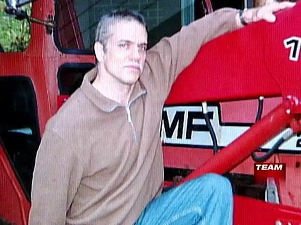
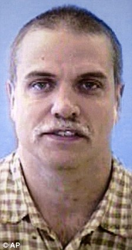
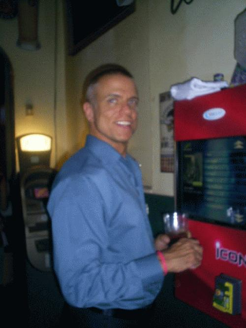
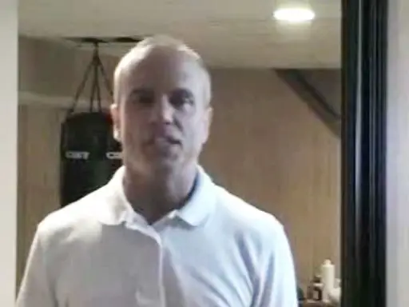
George Sodini was born on September 30, 1960.[4][5] He was raised in the Pittsburgh, Pennsylvania, area, where his family resided.[6] Public records provide limited details on his childhood, with no documented early indicators of social challenges or introversion.[4]
Sodini earned a bachelor's degree from the University of Pittsburgh in 1992, in a technical field supporting his subsequent career in systems analysis.[7] Specific information on his high school education or academic performance remains unavailable in accessible records.
George Sodini earned a Bachelor of Science degree in computer science from the University of Pittsburgh in 1992.[8] Following graduation, he pursued a career in information technology, working as a computer programmer and systems analyst in the Pittsburgh area.[8] His professional roles demonstrated technical proficiency in programming and systems design, fields that reward merit-based skills such as developing software solutions.[9]
In 1999, Sodini joined K&L Gates, a prominent international law firm headquartered in Pittsburgh, as a systems analyst in the accounting and finance department.[10] He held this position continuously until his death in 2009, specializing in .NET software development, which involved maintaining and optimizing financial systems for the firm.[1][11] This decade-long tenure at a reputable organization indicates sustained professional competence, with no documented instances of misconduct, poor performance, or disciplinary issues.[12]
Sodini's employment provided stable income that supported an independent lifestyle, including homeownership in Scott Township, Pennsylvania.[13] Amid the 2008 economic downturn, he expressed personal anxieties in private writings about potential job insecurity and layoffs affecting the firm, yet he retained his position without interruption.[12] His career trajectory reflects conventional success in a competitive technical sector, countering any implication of inherent professional failure.
Sodini was never married and had no children. His personal blog entries, maintained from at least 2008 until days before the incident, detail a long pattern of unsuccessful romantic pursuits, including approaches to women at churches, social events, and fitness venues over a period of approximately 20 years.[14][2]
In these writings, Sodini chronicled specific instances of rejection, such as attending singles events at Protestant churches in 2008 and receiving no positive responses despite repeated efforts, and earlier attempts at Catholic mixers in the 1990s that similarly yielded no dates. He expressed frustration over what he perceived as consistent dismissal, claiming in one entry to have been rebuffed by an exaggerated "30 million women" across 18 to 25 years, underscoring his sense of relational failure despite self-described efforts to present as attractive and well-groomed.[15][14]
To address his dating challenges, Sodini participated in self-help seminars, including one led by relationship author R. Don Steele, where he appeared attentive but reported no subsequent success in applying the advice. At age 48, standing 5 feet 10 inches tall and weighing 155 pounds through regular exercise, he contrasted his physical maintenance with ongoing isolation, noting in blog posts a lack of intimacy since around 1984.[16][17] No records indicate ongoing familial obligations, legal disputes over custody, or allegations of abuse in his personal relationships.[18]
George Sodini maintained a personal website, hosted on his own server under the domain georgesodini.com, which he began updating in late 2008 with entries chronicling his daily life, exercise routines, and personal struggles with relationships. The site included logs of gym visits, such as notations on August 1, 2008, describing a workout session followed by reflections on social isolation, and September 2008 entries detailing failed attempts at meeting women through structured social events. These posts featured mundane details like meal plans and weightlifting progress, interspersed with laments over decades of romantic rejection, such as a November 2008 entry stating, "48 yr old virgin... who ever thought that would be me?"
In addition to the blog, Sodini uploaded several videos to YouTube in 2008, primarily monologues filmed in his home or car, where he discussed his loneliness and dissatisfaction with personal circumstances. Another clip from the same period vaguely alluded to potential future steps, stating, "Maybe soon some changes gonna happen," without specifying actions.[3]
By July 2009, blog entries intensified in tone, with posts referencing planning in the context of his ongoing relational frustrations, tied to observations of women's selectivity in partners. Themes recurred around perceived patterns in female mate selection, including entries critiquing what he described as hypergamous tendencies and cultural changes favoring certain male traits, as in a July 2009 post noting, "Women just do not care... they want the best." The self-hosted site's content was uncovered by investigators after the August 4, 2009, incident, with archived materials showing no explicit incitements to violence against specific individuals or groups prior to the event.
Sodini's writings centered on a profound sense of rejection by women, whom he perceived as systematically uninterested in him despite his physical efforts to improve his appeal, such as regular gym attendance and attempts at social engagement. In a May 18, 2009, entry, he stated, "Women just don't like me. There are 30 million desirable women in the U.S. and I cannot find one. Not one of them finds me attractive," framing his 20-year celibacy not as a personal failing but as a broader pattern of female disinterest toward men like him.[19] This grievance echoed evolutionary mating dynamics, where female selectivity favors traits like physical attractiveness and status, leaving average men with fewer opportunities amid rising obesity rates—over 40% of U.S. adults in 2009—and shifting cultural norms that devalue non-elite males. His December 29, 2008, reflection amplified this, claiming "30 million women rejected me – over an 18- or 25-year period," underscoring a causal view of relational asymmetry rather than isolated mental health issues.[9]
Critiques of modern dating permeated his posts, highlighting perceived imbalances like women's leverage in divorce proceedings and a cultural environment that, in his estimation, prioritized female choice over mutual pairing. Sodini had not dated since 1984 or engaged in sexual relations since 1990, yet he pursued self-improvement through books like How to Date Young Women by R. Don Steele, indicating awareness of pickup artistry tactics but ultimate futility against what he saw as entrenched hypergamy.[18] He implied societal devaluation of ordinary men, noting in undated entries that personal efforts yielded no relational gains over decades, aligning with empirical trends where women initiate approximately 70% of divorces, often citing unmet emotional or status expectations. These views rejected egalitarian ideals of uniform partner accessibility, instead nodding to first-principles realities of mate competition, where a minority of men capture disproportionate female attention—as evidenced by dating app data showing the top 20% of men receiving 80% of interest.
Sodini articulated no formal political ideology, but his writings implicitly critiqued norms promoting indiscriminate pairing, positing that men derive essential confidence from female validation—"He gets a boost on the job, career, with other men, and everywhere else when he knows inside he has someone to spend the night with and who is also a friend."[9] This causal realism contrasted with contemporaneous media characterizations of his frustrations as undifferentiated misogyny, overlooking structural factors like the fourfold higher male suicide rate linked to relational isolation, with over 75% of U.S. suicides being male amid declining marriage rates for non-top-tier men. His emphasis on unchosen loneliness over therapeutic euphemisms highlighted empirical asymmetries in sexual markets, where female selectivity, amplified by expanded options in late-2000s America, exacerbated outcomes for unpaired males without invoking victimhood narratives.
Sodini acquired his firearms through legal purchases from federally licensed dealers, passing required federal and Pennsylvania state background checks conducted via the National Instant Criminal Background Check System (NICS) and Pennsylvania State Police, with no disqualifying criminal history or documented mental health commitments identified.[20][11] The weapons consisted of two 9mm semi-automatic pistols equipped with 30-round magazines and one .45-caliber revolver, all compliant with Pennsylvania law permitting handgun possession by non-prohibited persons following dealer sales and background verification.[21][4] This process confirmed his eligibility under federal prohibitions (e.g., no felony convictions, domestic violence misdemeanors, or adjudicated mental defect status) and state requirements, underscoring that the acquisition adhered to prevailing legal standards without evidence of straw purchases or illicit sourcing.[22]
In July 2009, Sodini's online diary entries reflected ongoing isolation and resolve, including a July 20 notation that "everything still sucks," amid continued expressions of personal failure without indications of altered behavior or external intervention. He persisted in his regular attendance at LA Fitness in Collier Township, Pennsylvania, where he held a membership and had frequented classes as part of his fitness routine.[23]
On August 1, 2009, Sodini visited Salon IAOMO, a tanning facility he patronized three to four times weekly since September 2008, and purchased a $57 package for ten additional sessions, underscoring maintained focus on physical upkeep.[23] That day, he proposed meeting a part-time employee there for whiskey sours, an overture she declined citing busyness, marking one of his final documented social initiatives without follow-up outreach for support.[23]
Sodini took August 3, 2009—a Monday—off from his job at National City Corp. to rehearse his intended sequence of actions, diary entry recording: "I took off today, Monday, and tomorrow to practice my routine and make sure it is well polished. I need to work out every detail, there is only one shot."[3] No records show consultations with mental health professionals, confidants, or authorities in this interval.[23]
August 4, 2009, followed this pattern as Sodini drove from his Scott Township residence to the LA Fitness center around 8:00 p.m., arriving during an aerobics class in line with his prior visits.[24]
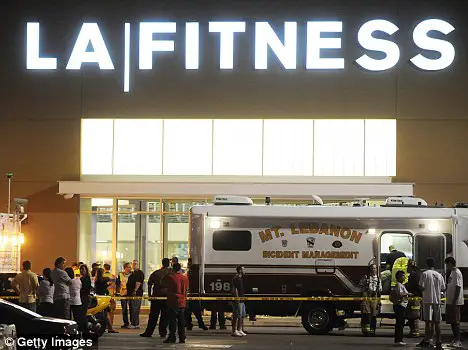
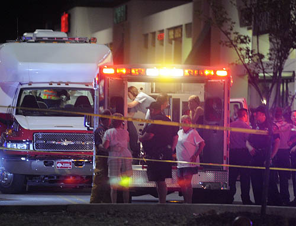
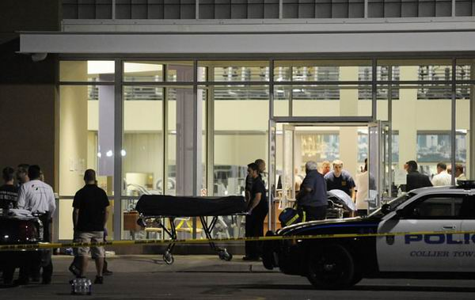
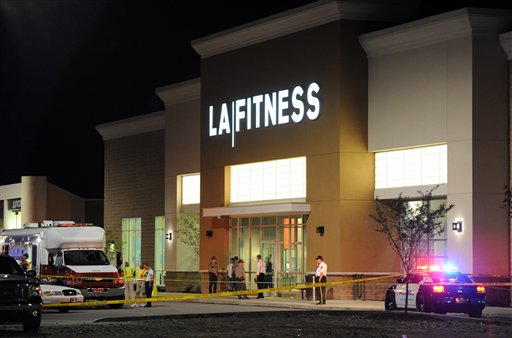
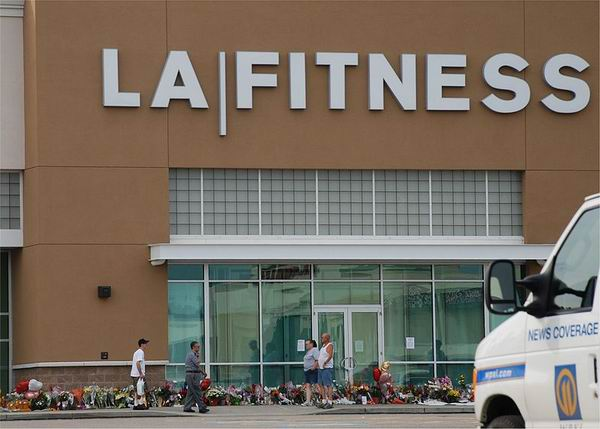
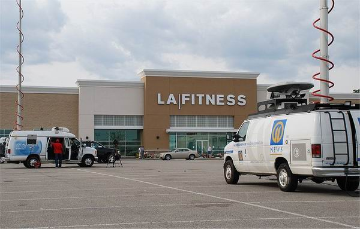
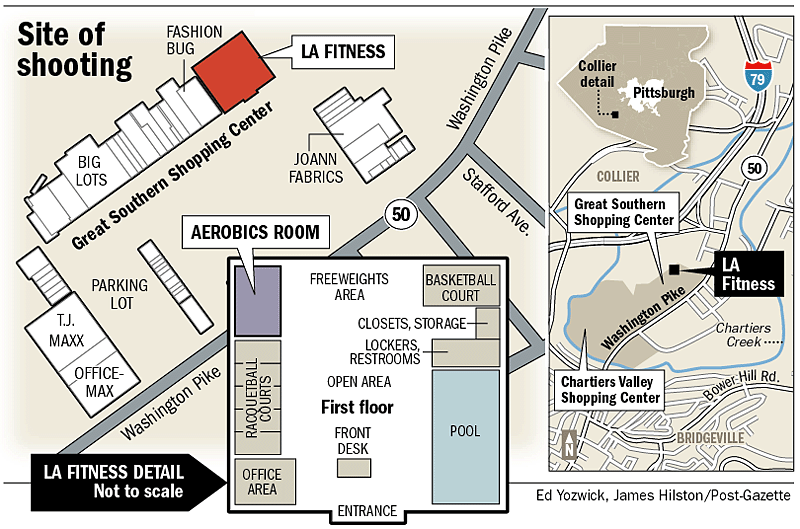
On August 4, 2009, at approximately 7:56 p.m., George Sodini entered the LA Fitness gym in Collier Township, Pennsylvania, for the third time that day, carrying a gym bag containing multiple handguns and extra ammunition.[11] He proceeded to the aerobics studio where a Latin dance class, consisting primarily of women and numbering around 30 participants, was underway.[25] Sodini, dressed in dark clothing including a black jacket and headband, entered the room, held down the light switch for about 15 seconds to extinguish the lights—a technique he had learned during prior visits—and advanced roughly 10 feet inside before dropping his bag and initiating gunfire.[4]
Sodini fired indiscriminately at class participants using two 9mm semi-automatic pistols, emptying the first magazine and partially discharging the second, while splintering mirrors and scattering shell casings across the floor; forensic analysis later confirmed he discharged at least 36 rounds, with estimates reaching up to 52 shots from the weapons carried.[4][26] The assault targeted random individuals in the darkened room, with no evidence of prior specific threats against the gym or its attendees. Eyewitness accounts described participants scrambling to escape through side doors or hiding behind aerobic equipment as shots rang out.[4]
The entire shooting sequence lasted approximately one minute, concluding when Sodini retreated to a corner of the room, drew a .45-caliber pistol, and inflicted a fatal self-inflicted gunshot wound to the head, collapsing against a wall near aerobic steps; a fourth weapon, a .32-caliber pistol, remained unused in his pocket.[4][11] Police were dispatched following a 911 call around 8:16 p.m., arriving to find Sodini deceased alongside spent casings and the chaotic aftermath in the studio, which held about 70 people total in the broader gym at the time.[11][4]
Three women were killed in the shooting: Heidi Overmier, 46, a mother of two and employee at a local bank; Jody Billingsley, 37, a medical sales representative; and Elizabeth Gannon, 49, an X-ray technician.[4] All fatalities occurred from multiple gunshot wounds sustained during the aerobics class at the LA Fitness gym in Collier Township, Pennsylvania, on August 4, 2009.
Nine other women were injured, with injuries ranging from gunshot wounds to the torso, limbs, and head, some requiring surgery and extended hospitalization. Emergency medical services responded within minutes, transporting victims to nearby hospitals including Allegheny General Hospital and UPMC Presbyterian, where triage and treatment were prioritized for the most severe cases. By August 6, 2009, several survivors had been released, though some faced long-term recovery.
The victims were all female participants in the Latin dance aerobics class, employed in various professional roles such as healthcare and finance, with no documented prior personal or professional connections to the perpetrator, George Sodini.
Following the shooting on August 4, 2009, Collier Township police received a 911 call at 8:16 p.m. reporting gunfire at the LA Fitness center, prompting an immediate response where officers encountered a chaotic scene of evacuating survivors, bloodied floors, shell casings, and three deceased women in the aerobics room.[4] Allegheny County Police, including Superintendent Charles Moffatt, assumed lead investigation, coordinating victim identification and hospital transports to facilities such as St. Clair Hospital and UPMC Mercy.[4] The Federal Bureau of Investigation (FBI) and Bureau of Alcohol, Tobacco, Firearms and Explosives (ATF) provided assistance, with the ATF tracing the perpetrator's weapons.[4]
Forensic examination confirmed George Sodini died from a self-inflicted gunshot wound to the head using his .45-caliber pistol, after firing at least 36 rounds from two 9mm pistols (one emptied, the other with 12 rounds remaining) during the one-minute attack; the .32-caliber pistol in his pocket went unused, and ballistics matched ammunition to his legal purchases.[4] A search of the scene and Sodini's gym bag recovered weapons, extra 30-round magazines, and a typed note expressing personal frustrations, while his home yielded four additional rifles and shotguns, a handwritten suicide note, a circled aerobics class schedule, and his computer for digital analysis of online writings.[4] His vehicle was processed as evidence, revealing no indications of accomplices or external coordination.[4]
Investigators found no prior criminal record for Sodini, no known mental health treatment history, and no connections to victims, ruling out any relational motive or broader conspiracy; the case was classified as a lone-actor murder-suicide with no manifesto beyond blog posts and recovered notes.[4] A week prior, on July 30, Port Authority police had questioned and searched Sodini over a reported grenade-like object on a bus but released him due to lack of witness confirmation, a detail later referenced in his writings but deemed unrelated to the shooting plot.[27][28] County computer forensics reviewed his online activity to assess if associates had prior knowledge, concluding no legal reporting obligation existed but noting ethical lapses in non-disclosure.[4]
National news outlets, including CNN and The New York Times, published headlines on August 5, 2009, describing the perpetrator as a "gym shooter" motivated by relational grievances detailed in his online blog, where he expressed prolonged frustration over romantic rejections and social isolation.[11][9] CNN highlighted police assessments of Sodini's "hatred" toward women and society, framing the attack through the lens of personal animosity amplified by his writings.[11] Similarly, CBS News on the same day excerpted diary-like entries from the blog, such as "Women Just Don't Like Me," underscoring perceived misogynistic elements while attributing the rampage to his self-documented loneliness.[19]
This early national coverage prioritized the blog's content on interpersonal failures, with outlets like The Guardian also noting Sodini's posts about his inability to secure a girlfriend, which rapidly circulated online and shaped speculative narratives within hours of the August 4 incident.[10] Such framing often emphasized individual misogyny derived from the source material, with minimal initial reference to empirical data on broader male social isolation trends, such as rising involuntary celibacy rates or declining marriage statistics among men in the U.S. during the late 2000s. This selective focus aligned with patterns in mainstream media reporting, where relational violence against women received prominent attention but contextual societal factors received less scrutiny.
In contrast, local Pittsburgh media, including the Pittsburgh Post-Gazette, detailed the sequence of the attack and community reactions on August 6, 2009, reporting on the shooter's premeditated "lethal plan" based on recovered notes and witness accounts, alongside expressions of shock from residents in Collier Township.[4] Coverage included victim identifications and memorials for the three deceased women—Heidi Overmier, 46; Elizabeth Gannon, 49; and Jody Billingsley, 37—emphasizing communal grief over interpretive motives.[4] The swift online dissemination of Sodini's blog, first aggregated on forums and then amplified by national reports, accelerated public speculation but also prompted early calls for caution against unverified manifestos in journalistic accounts.[10]